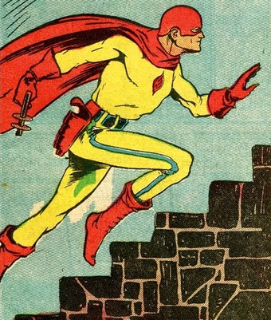
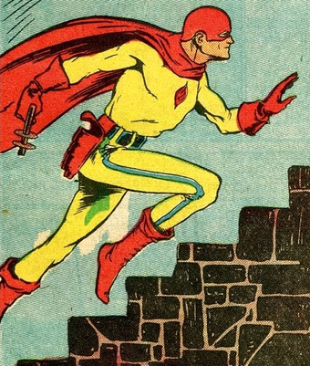

For other uses, see Superhero (disambiguation).
A superhero (sometimes rendered super-hero or super hero) is a type of heroic stock character who possesses supernatural or superhuman powers and who is dedicated to fighting crime, protecting the public, and usually battling supervillains. A female superhero is sometimes called a superheroine (also rendered super-heroine or super heroine), although the word superhero is commonly used for females also. Superhero fiction is the genre of fiction that is centered on such characters, especially in American comic books since the 1930s.
By most definitions, characters do not require actual superhuman powers or phenomena to be deemed superheroes.[1][2][3] While the Dictionary.com definition of "superhero" is "a figure, especially in a comic strip or cartoon, endowed with superhuman powers and usually portrayed as fighting evil or crime",[4] the longstanding Merriam-Webster dictionary gives the definition as "a fictional hero having extraordinary or superhuman powers; also: an exceptionally skillful or successful person".[5] Terms such as masked crime fighters, costumed adventurers or masked vigilantes are sometimes used to refer to characters such as the Spirit, who may not be explicitly referred to as superheroes but nevertheless share similar traits.
Some superheroes use their powers to counter daily crime while also combating threats against humanity from supervillains, who are their criminal counterparts. Often at least one of these supervillains will be the superhero's archenemy. Some long-running superheroes such as Batman, Spider-Man, Superman, Captain America, Wonder Woman, Iron Man, the Flash, Wolverine, Green Lantern, and Hulk have a rogues gallery of many villains.
ContentsThe word 'superhero' dates to at least 1917.[6] Antecedents of the archetype include such folkloric heroes as Robin Hood, who adventured in distinctive clothing.[7] The 1903 play The Scarlet Pimpernel and its spinoffs popularized the idea of a masked avenger and the superhero trope of a secret identity.[7] Shortly afterward, masked and costumed pulp fiction characters such as Zorro (1919), The Shadow (1930) and comic strip heroes, such as the Phantom (1936) began appearing, as did non-costumed characters with super strength, including Patoruzú (1928), the comic-strip character Popeye (1929) and novelist Philip Wylie's protagonist Hugo Danner (1930).[8]

 

In the 1930s, both trends came together in some of the earliest superpowered costumed heroes such as Japan's Ōgon Bat[9][10] (visualized in painted panels used by kamishibai oral storytellers in Japan since 1931), Mandrake the Magician[11][12][13] (1934), Superman in 1938 and Captain Marvel (1939) at the beginning of the Golden Age of Comic Books.
During the 1940s there were many superheroes: The Flash, Green Lantern and Blue Beetle debuted in this era. This era saw the debut of first known female superhero, writer-artist Fletcher Hanks's character Fantomah, an ageless ancient Egyptian woman in the modern day who could transform into a skull-faced creature with superpowers to fight evil; she debuted in Fiction House's Jungle Comics #2 (Feb. 1940), credited to the pseudonymous "Barclay Flagg".[14][15] The Invisible Scarlet O'Neil, a non-costumed character who fought crime and wartime saboteurs using the superpower of invisibility created by Russell Stamm, would debut in the eponymous syndicated newspaper comic strip a few months later on June 3, 1940.[16]
| name | power | age |
|---|---|---|
| superman | eye | 20 |
| thor | hammer | 30 |
| sum | 50 |
Many superhero characters display the following traits: